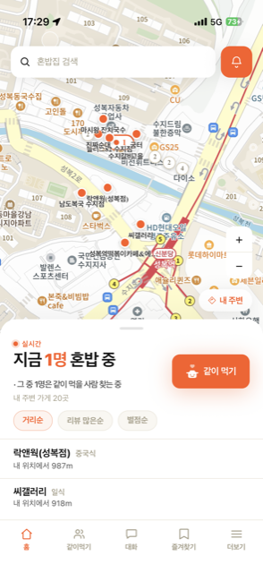
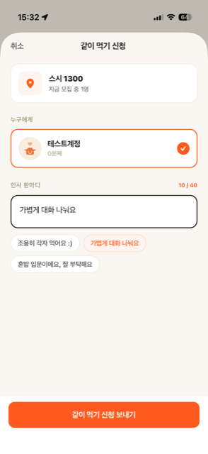
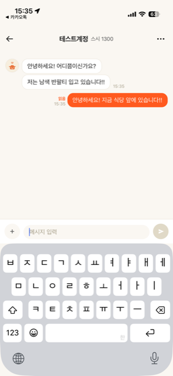
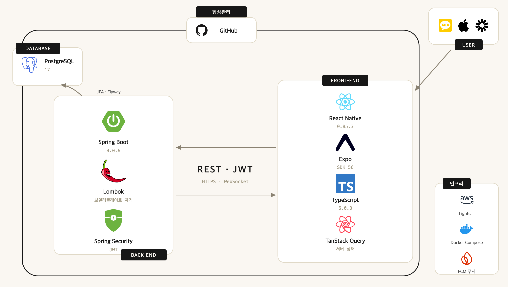

혼자 먹는 사람들을 위치 기준으로 연결하는 모바일 서비스. 기획·설계부터 백엔드·앱·배포·운영까지 1인으로 진행하였습니다.
| 기간 | 2026.06 – 2026.09 (3개월) · 커밋 671개 |
|---|---|
| 인원 | 개인 프로젝트 1인 — 기획 · ERD · API 명세 · 백엔드 · 앱 · 배포·운영 전 영역 |
| 기술 스택 | Java 21 · Spring Boot 4.0 · Spring Security · JPA · PostgreSQL 17 · Flyway · WebSocket · FCM · Testcontainers · k6 · Docker · Caddy · AWS Lightsail · React Native |
| 규모 | 도메인 17개 · 테이블 25개 · 엔드포인트 81개 · Flyway V1~V30 · 운영 코드 17,870줄 / 테스트 18,914줄(827개) |
| 링크 | GitHub 저장소 · 부하 테스트 리포트 · TestFlight 배포 |




카카오 로컬 API로 붙일 계획이었으나, 개발 전 약관 확인에서 검색 결과를 영구 저장할 수 없다는 것을 알았습니다. 식당마다 체크인·리뷰·즐겨찾기가 쌓이는 구조라 장소가 우리 DB에 없으면 도메인이 성립하지 않습니다.
매 요청마다 외부 API를 부르면 검색 응답이 그쪽 지연·쿼터에 묶이고 장애까지 함께 받습니다. 그래서 공공데이터 전국일반음식점 65만 건을 우리 DB의 마스터로 적재하고, 카카오는 지도 렌더링 전용으로 앱이 직접 로드하게 분리했습니다.
결과적으로 검색에서 외부 API 호출이 0회가 되어, 응답이 우리 DB 성능에만 의존하게 됐습니다 — Part 2의 병목이 순수하게 우리 쿼리 문제인 이유입니다.
체크인 상태는 다섯 개입니다(SEEKING 모집중(시작 지점) / ACTIVE 혼밥 중 / TOGETHER 같이 먹는 중 / ENDED 종료 / CANCELED 취소됨). 종료를 ENDED와 CANCELED 둘로 나눈 건 통계 때문입니다.
이 서비스의 존재 이유가 “혼자 혼밥하는게 나뿐만이 아니다”를 숫자로 보여주는 것이라, 체크인만 하고 5분 만에 나간 사람을 ‘오늘 혼밥한 사람들의 통계’에 넣으면 화면의 숫자가 거짓이 됩니다.
따라서 “진행 중 체크인은 최대 1개”라는 계획을 세웠습니다. 해당 문제를 서비스 계층에서 검사할 수도 있지만, 검사와 저장 사이에 다른 요청이 끼면 뚫리게 되어 해당 문제를 소스에서 판단하는것이 아닌 부분 유니크 인덱스로 DB에서 판단하도록 진행했습니다.
이 인덱스 하나가 동시성 문제까지 같이 막아 줍니다.
버튼을 빠르게 두 번 누르면 요청 두 개가 거의 동시에 들어옵니다. 서비스 코드에서 “이미 진행 중인 체크인이 있나?”를 검사해도, 두 요청이 나란히 ‘없다’로 판단하여 체크인이 두개가 INSERT 될 수 있습니다.
하지만, 해당 문제를 DB에서 막는다면 첫 INSERT는 통과가 되지만, 두번째 INSERT는 통과되지 못합니다. 이 위반 예외를 잡아 409로 바꿔 “이미 진행 중인 체크인이 있습니다”로 보여줍니다. 검사를 코드에만 두면 이렇게 새지만, 스키마에 두면 어떤 경로로 들어와도 똑같이 지켜집니다.
배운 것 — 모든 검증을 DB로 내릴 수는 없지만, 깨지면 서비스의 의미가 무너지는 규칙은 스키마에 두는 편이 안전합니다. 여기서는 ‘진행 중 체크인 1개’가 통계의 신뢰도와 직결돼 그 기준이 됐습니다.
ORDER BY name이 20건만 필요한 검색에 65만 행을 전부 정렬하게 만들었고,Page로 반환하면 자동으로 붙는 COUNT 쿼리가 상당한 부하를 차지하고 있었습니다.plan_cache_mode)을 바꿔 3ms로 잡았습니다.| 지표 | 개선 전 | 개선 후 | 변화 |
|---|---|---|---|
| 처리량 (장소 검색) | 4.4건/초 | 150건/초 이상 | 34배 이상 |
| 검색 응답 (2글자) | 669.8 ms | 1.2 ms | −99.8% |
| 최악 응답 (희귀 검색어) | 227 ms | 3 ms | −98.7% |
| 최대 부하 시 DB CPU | 197% (포화) | 20.4% | −90% |
| 운영 DB 실측 (배포 후) | 1,028 ms | 1.4 ms | −99.9% |
배운 것 — 고쳤다는 사실보다 내 수정이 만든 문제를 스스로 찾은 것이 중요했습니다. 그건 고친 뒤에 다시 재봐야만 보입니다. 같은 측정에서 채팅 목록의 N+1도 발견했지만 대화방당 0.03ms라 고치지 않기로 했습니다.
TOGETHER 체크인이 생깁니다. 둘 중 한 명이 자리를 뜨는 기능을 처음엔 “떠나는 사람의 체크인만 TOGETHER에서 빼면 된다”고 만들었습니다. TOGETHER 상태에 그대로 있었습니다. 알림도 가지 않아 앱에는 “○○님과 같이 먹는 중”이 계속 떠 있었습니다.SEEKING(모집중)으로 되돌립니다. 만들면서 순서 문제가 나왔습니다. 두 체크인을 이어 주는 값이 mealRequestId인데 leaveMatch() 안에서 null이 되기 때문에, 떠나는 사람의 체크인을 먼저 바꾸면 남겨진 사람도 대화방도 찾을 수 없습니다.
TOGETHER는 혼자 성립할 수 없는 상태라, 한쪽만 풀면 데이터가 앞뒤가 맞지 않게 됩니다. 이후로는 같이 바뀌어야 하는 것을 한 트랜잭션으로 묶습니다.재등록 시V27 | 같은 기기에서 새 토큰(새 로그인)이 등록되면 그 기기의 옛 토큰을 지웁니다. 토큰은 값이 바뀌어 옛 행을 찾을 수 없지만, 설치 ID(installation_id)는 앱을 지울 때까지 그대로라 찾아낼 수 있습니다. |
| 발송 시 | FCM이 영구 무효(UNREGISTERED)로 판정한 토큰은 발송 직후 그 행을 지웁니다. 앱이 삭제된 기기가 여기서 걸립니다. |
60일 후V26 | 둘 다 안 걸린 행의 최후 안전망입니다. 앱이 등록할 때만 찍히는 컬럼(last_registered_at)을 따로 만들어 기준으로 삼았습니다. |